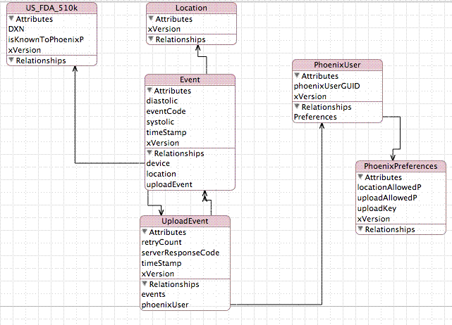

<!DOCTYPE HTML PUBLIC "-//W3C//DTD HTML 4.01 Transitional//EN">
<html><head>
<meta content="text/html;charset=ISO-8859-1" http-equiv="Content-Type"><title>Cell Phone UI, Phoenix Project team</title></head>
<body style="background-color: rgb(255, 255, 255);">

<div class="Section1">
<blockquote style="margin-top: 5pt; margin-bottom: 5pt;">
  <h2 style="text-align: center;"><a name="mozTocId861890"></a></h2>

  <h2>
  <center><st1:city><st1:place><span style="color: rgb(0, 153, 0);"><font color="#009900">Phoenix</font></span></st1:place></st1:city><span style="color: rgb(0, 153, 0);"><font color="#009900">
Ambulatory Blood Pressure Monitor Project<br>

  <u>Sub-project: </u></font></span><span style="color: rgb(0, 153, 0); text-decoration: underline;" editable="true" id="SubprojectName">Cell Phone UI, Phoenix Project team</span></center>

  </h2><br><h3><br></h3><h3>Project Report</h3><br><span style="font-weight: bold;">Initial Description from Chase:</span><br><br>xVersion appearing in every table is a schema version identifier to anticipate updates to schema
over time.

<br><br>Central table is the "Event" datatype as that is a reading event.  I don't care if it was
triggered as manual or automatic at present.   Can add additional fields such as beats per minute.
 It has an optional foreign key reference to a yet to be specified "Location" datum.  Also, I do
intend the reading API to pass along the device identifier -- believing that is always available
in the form of a 510k value, although I'd like to abstract the table "US_FDA_510k" to be
international.  That table will always contain an entry for "UNKNOWN" if there is no way to read
the hardware identifier, and if the end-user hand-entered a value (as determined through the
iPhone UI interaction), there would be a fake DSN identifier indicating "MANUAL".

<br><br>Recorded blood pressure monitoring events are always apart from an "UploadEvent" to the Phoenix
research site.   In this way, a user could use the iPhone application to keep their Blood Pressure
records without ever uploading to Phoenix.   When there is a Phoenix "UploadEvent", then and there
do we grab a cached value for the Phoenix user credentials, or walk them through to register with
a "one-click" strategy if we realize this is a first time, or force them to log in directly, etc.

<br><br>There is an additional subtle design strategy here : if ever the user decides to "terminate" their
relationship (or ask for complete privacy), then the application would scrub all UploadEvent
records on the iPhone and terminate the PhoenixUser information.  Note: in "UploadEvent",
serverResponseCode could be a unique TXN identifier that allows that user to run a report for the
data submitted.

<br><br><span style="font-weight: bold;">Initial Comments from Larry:</span><br><br>Caching the website credentials on the phone sounds like a problem. 
Phones get lost and stolen, and I expect to use the user's password as
a private key (directly or indirectly).  Caching the username is
probably OK, but upload events might always have to be interactive so
a user can type in a password.

<br><br>There are potentially other kinds of events, such as getting an
activity measurement, getting a temperature measurement, getting a
cardiac electrical activity measurement, etc.  They will not
necessarily all occur on the same schedule, so you'll need multiple
kinds of event records, or a way to note which data fields are filled
in for a particular event.

<br><br>UploadEvent is not meant to be a "subclass" of Event, is it?  Maybe
Event needs to be renamed MeasurementEvent or something similar.

<br><br>We might upload to Microsoft HealthVault or other health record
databases instead of Phoenix, or in addition to Phoenix.  I wouldn't
add that now, just remember to keep enough flexibility so it can be
added later.

<br><br>"510k" is not a good device type identifier, so I'd just call it
device identifier.  The industry does not use 510(k) numbers that way.
 Device types are identified by Manufacturer and a
Manufacturer-defined Model number.  The individual devices themselves
are also often identified by a model-specific serial number, and we
want that information as well (per upload event, or per measurement
event).

<br><br>Using the serverResponseCode as a transaction identifier to identify a
report is a neat idea, though it probably won't work out in the long
run because there will be several types of reports and analyses to
choose from.  Keep the concept around until the design of the website
and reports shape up a bit more, but don't put any extra work into it
yet.

<br><br><span style="font-weight: bold;">Data model being discussed:</span><br><br><br><br><br><h3>Volunteers Are Needed</h3>

  <p>Would
you like to work on any part of this project? &nbsp;Envision a
prototype for a specific cell phone, propose a way to implement it, and
send
your suggestion
to <a href="mailto:labeaty@ieee.org?Subject=Data_Acquisition_Device_Prototype">Larry</a>. &nbsp;Or start out by just asking questions.<br>

  </p>

  <h3><a name="mozTocId667544"></a><font face="Times New Roman">About
This Page</font></h3>

  <p>This page is maintained by <a href="mailto:labeaty@ieee.org?Subject=Data_Acquisition_Device_Prototype">Larry
A. Beaty</a>. &nbsp;It was last updated 14 February 2010.</p>

  <p>The author(s) provide this information as a public service,
and agree to place any novel and useful inventions disclosed herein
into the public domain. They are not aware that this material
infringes on the patent, copyright, trademark or trade secret
rights of others. However, there is a possibility that such
infringement
may exist without their knowledge. The user assumes all responsibility
for determining if this information infringes on the intellectual
property rights of others before applying it to products or services.</p>

  <p>(C) 2010 Larry A. Beaty, A.Chase Turner. Copying and distribution of this
page
is permitted in any medium, provided this notice is preserved.</p>

  <p></p>

  <center><a href="../../index.htm">Back to the Phoenix
Home Page</a></center>

  <p></p>

  <p>&nbsp;</p>

</blockquote>

</div>

</body></html>